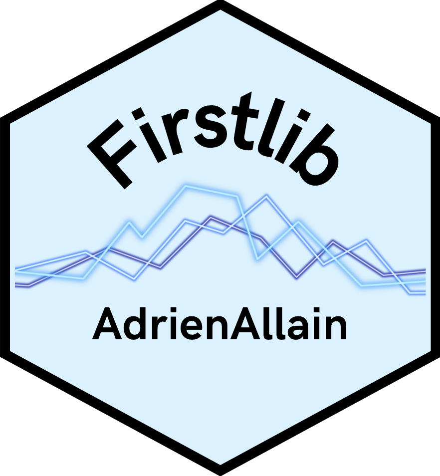

Compter le nombre d'adjoints
compter_nombre_d_adjoints.RdCompte le nombre d'adjoints au maire dans un df
Details
La fonction compte le nombre de lignes du df où la colonne "Libellé.de.la.fonction" contient le mot "adjoint"
Cette fonction utilise le package `dplyr` pour manipuler le dataframe.
Examples
df <- data.frame(
Code.du.département = rep("", 4),
Libellé.du.département = rep("", 4),
Code.de.la.collectivité.à.statut.particulier = rep("", 4),
Libellé.de.la.collectivité.à.statut.particulier = rep("", 4),
Code.de.la.commune = rep("", 4),
Libellé.de.la.commune = rep("", 4),
Nom.de.l.élu = rep("", 4),
Prénom.de.l.élu = rep("", 4),
Code.sexe = rep("", 4),
Date.de.naissance = c("01-01-1950", "15-06-1970", "10-09-1985", "not a date"),
Code.de.la.catégorie.socio.professionnelle = rep("", 4),
Libellé.de.la.catégorie.socio.professionnelle = rep("", 4),
Date.de.début.du.mandat = rep("", 4),
Libellé.de.la.fonction = c("Maire", "3ème adjoint au Maire", "2ème adjoint au Maire", "Adjoint"),
Date.de.début.de.la.fonction = rep("", 4),
Code.nationalité = rep("", 4)
)
compter_nombre_d_adjoints(df) # Retourne 3
#> Error in select(df, Libellé.de.la.fonction): could not find function "select"